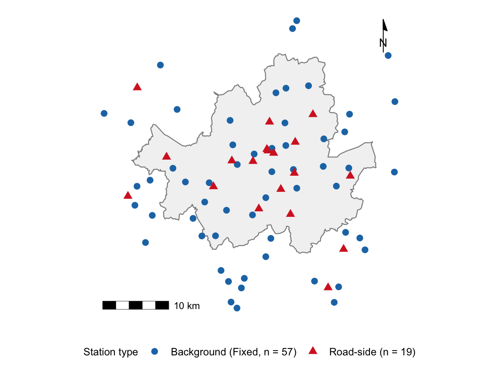
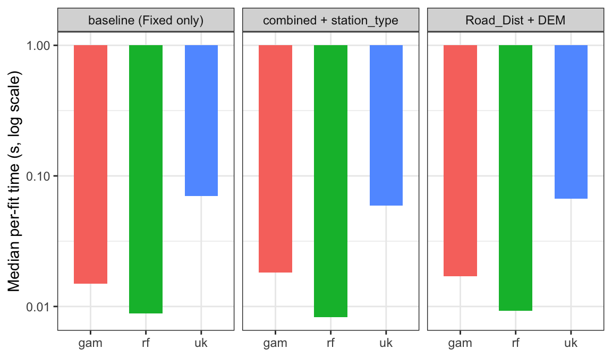
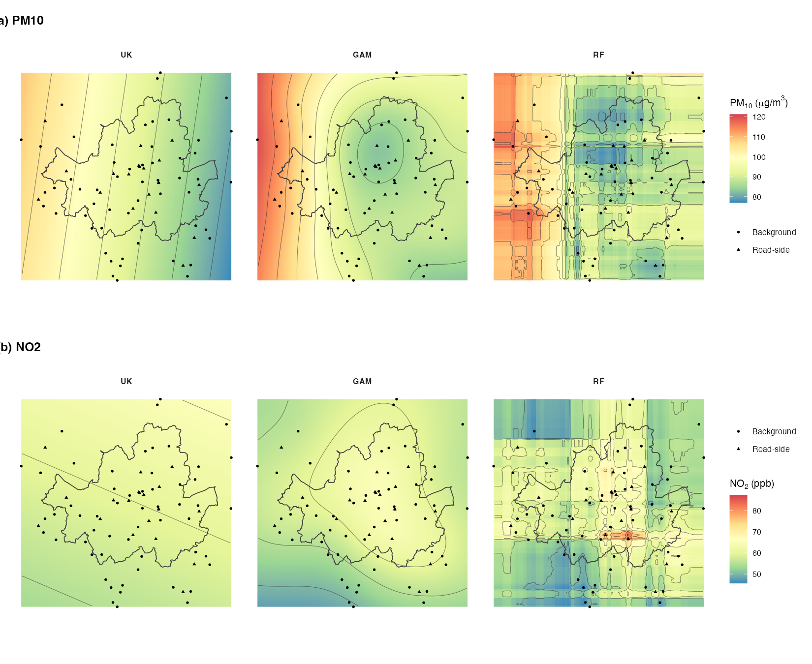
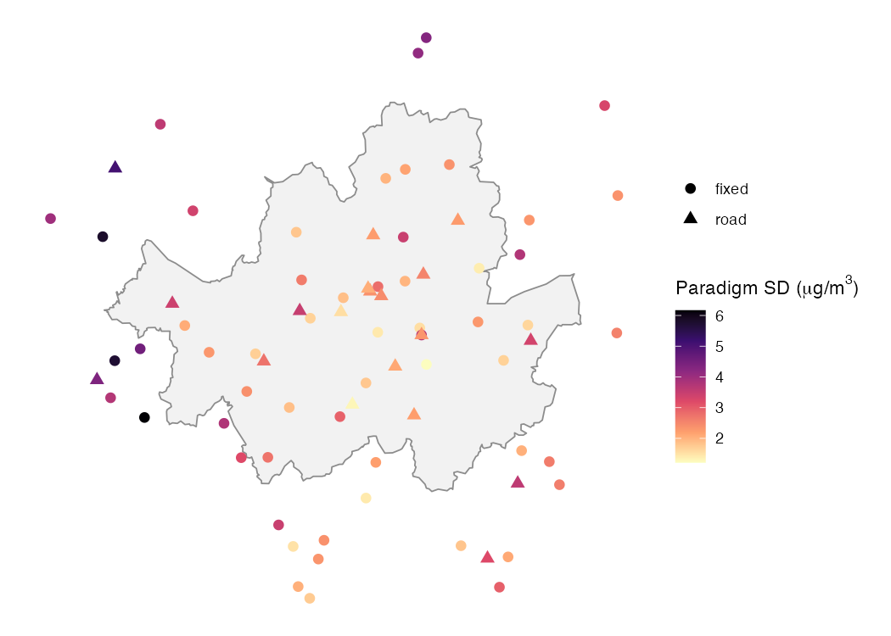
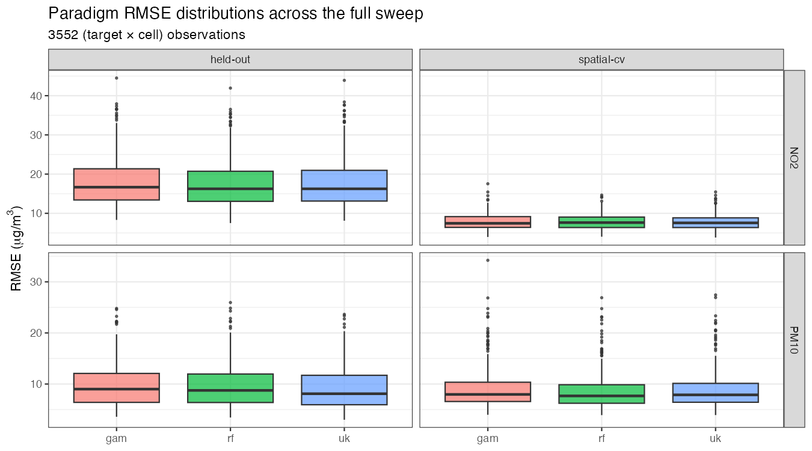

| Authors | Region | Pollutant | N | Methods | Validation |
|---|---|---|---|---|---|
| Wong et al. (2004) | USA | PM10, O3 | 732/739 | IDW, OK, NN | LOOCV (R²) |
| Deligiorgi & Philippopoulos (2011) | Athens | NO2, O3 | 10 | IDW, OK, NN, ANN | LOOCV (MAE) |
| Aalto et al. (2013) | Finland | Temp, precip | 207/20 | KED, GAM, GK | RMSE, MAD |
| Parmentier et al. (2014) | Oregon, USA | Temperature | 200-300 | UK, GWR, GAM | RMSE, MAE |
| Zhang & Shen (2015) | Xi’an, China | PM2.5 | 13 | IDW, OK, Trend surfaces | ME, MAE, RMSE |
| This study | Seoul, S. Korea | PM10, NO2 | 76 | UK, GAM, RF | in-sample / spatial CV / held-out |
aqsurface: Spatial Interpolation Methods for Urban Air Quality
A Speed-Accuracy Comparison of Kriging, GAM, and Random Forest on Seoul’s Monitoring Network
Abstract
Understanding the association between ambient air pollution and population exposure is a vital precursor for health risk assessment, and spatial interpolation has long been used to estimate concentration fields from a finite number of monitoring stations. However, comparisons across modelling paradigms have remained limited, and the published literature emphasises prediction accuracy in isolation, while computational cost and validation strategy are rarely reported jointly. In addition, the in-sample RMSE that is conventionally reported can be misleading for methods that interpolate exactly, and a systematic underprediction at road-side stations has been observed when models are trained only on background sites. This paper compares Universal Kriging (gstat), Generalised Additive Models (mgcv), and Random Forest (ranger) on a 76-station Seoul air-quality monitoring network for both PM10 and NO2. The three paradigms are evaluated under three validation regimes (in-sample, spatial cross-validation, and a held-out road-side set) and on per-fit wall-clock cost. Under spatial cross-validation, the paradigms differ by less than 6 % in RMSE, while their per-fit cost differs by an order of magnitude. Adding a station-type covariate to a combined-station training set removes the systematic 4 µg/m³ underprediction at road-side monitors regardless of paradigm. The accompanying aqsurface R package, released alongside this article, implements the comparison as a single benchmark function that returns RMSE, bias, and per-fit time in one tibble.
Keywords
spatial interpolation, kriging, generalised additive model, air quality, cross-validation, reproducibility
Introduction
Air pollution and population exposure in Seoul
Population health has been seriously threatened by daily ambient air pollution in South Korea. Despite the efforts to legislate national pollution standards, daily peaks in recent winters and springs have already exceeded the standards countless times. During 5-8 March 2019, the entire country experienced over 200 µg/m³ of PM10 and smog episodes; the national authorities warned everyone to reduce outdoor activities. As most of Seoul’s areas tend to experience disastrous levels of pollution frequently, residents can be exposed to air pollution unconsciously, which in the long term can lead to respiratory or cardiovascular ailments (K. Zhang & Batterman, 2013). Thus, understanding the spatial and temporal aspects of air pollution and its relationship with exposure is crucial.
Exposure research has exploited spatial interpolation (SI) to investigate the relationship between ambient air pollution and population exposure in a spatial context, namely “which places have high air pollution?” and “how many people can potentially become unwell from high episodes?” (Hoek et al., 2008; Jerrett et al., 2005; Lim & Lee, 2024). SI is a statistical method that can compute pollution fields over a wide area with a given set of point measurements. SI can mainly be split into a group that follows the assumption of spatial autocorrelation (e.g. Inverse Distance Weighted (IDW), kriging) and a group on statistical inference such as generalised linear models and generalised additive models (Wood, 2017). Methods that take spatial autocorrelation into account assume that the values tend to be more similar when closer together, whereas methods that use statistical inference delineate the inferential surfaces over a region by minimising the residuals of the model. A third group, machine learning (e.g. random forests, (Wright & Ziegler, 2017)), treats coordinates and station-level covariates as features without imposing any spatial structure a priori.
However, when air pollution monitoring stations such as those in Seoul are small in number compared to the size of the city, the estimation of the potential population at risk due to air pollution can be completely different depending on the measurement method used (Wu et al., 2019). Wong, Yuan and Perlin (2004) used four spatial interpolation methods (spatial averaging, nearest neighbour, IDW, and kriging) to estimate children’s exposure to air pollution across the USA. The outcomes of the four methods only showed a small difference of PM10 and O3 where the monitoring stations were denser, for example in the north-eastern cities and urban California, but were difficult to predict in the mountainous regions and high-altitude zones. Aalto et al. (2013) compared a Generalised Additive Model (GAM) and ordinary kriging (OK) to predict monthly mean temperature and precipitation in Finland and found that the GAM outperformed other methods by a small amount, but the biased distribution of stations (“concentrated in the urban areas” of Finland) might have evened out the RMSE measures.
In addition, previous studies have provided tentative estimates of population risk based on annual or monthly statistics, but the aggregated figure lacks the potential for including acute injuries after an abrupt pollution rise, which may be more severe in their health consequences. Short-term ambient PM2.5 exposure is associated with a 0.67% increase in all-cause mortality among older adults per 10 µg/m³ over 2-day windows (Di et al., 2017), and the multi-city analysis of Liu et al. (2024) across 380 urban areas confirms substantial temporal heterogeneity in the short-term effect that an annual mean would average out. The statistical machinery linking SI choices to this temporal axis has been described by Goldman et al. (2011), where the spatial misalignment between sparse monitoring stations and dense population locations interacts with the temporal aggregation window to bias short-term effect estimates. There is likely to be a greater difference between methods when the population at risk is measured at a finer temporal scale, which is exactly the regime in which short-term exposure surveillance must operate.
This article aims to compare spatial interpolation methods that can support estimating population exposure to daily air pollution in Seoul. The study compares Universal Kriging (UK, geostatistics), Generalised Additive Models (GAM, statistical inference), and Random Forest (RF, machine learning) at the day-night scale (12 h mean), and examines whether explicit station-type covariates can remove the systematic bias between background and road-side monitors. The study also argues that the choice of validation strategy may matter more than the choice of algorithm, and that wall-clock cost per fit appears to be the dimension on which the three paradigms truly separate.
A three-paradigm framing of the literature
Empirical comparisons of spatial interpolation methods for urban air quality have multiplied since Wong et al. (2004) introduced inverse distance weighting, ordinary kriging and the nearest-neighbour method to a PM10 and O3 study of the United States monitoring network. The literature surveyed in Table 1 is broadly consistent in that no single method is uniformly best, and the relative ranking tends to vary with station density, study extent and the choice of error metric (Aalto et al., 2013; Parmentier et al., 2014; L. Zhang & Shen, 2015). However, each new study still reports a leaderboard in which one method is declared the winner on the basis of leave-one-out or in-sample root-mean-square error (RMSE), and the corresponding R package implementations rarely accompany the publication.
The modelling literature on urban air quality interpolation can be organised into three distinct paradigms that are rarely compared head to head. The first is geostatistics, exemplified by universal kriging in gstat (Pebesma, 2004), which assumes a covariance structure tied to spatial separation and predicts via the best linear unbiased combination of observations. The second is statistical inference, exemplified by generalised additive models in mgcv (Wood, 2017), which makes no covariance assumption and fits a smooth (typically thin-plate) regression surface with REML-selected smoothing parameters. The third is machine learning, exemplified by random forests in ranger (Wright & Ziegler, 2017), which treats coordinates and station-level covariates as features for an ensemble of regression trees and does not impose any spatial structure a priori.
Within-paradigm comparisons are abundant, but cross-paradigm comparisons that fix the data, the validation regime, and the software environment are not. Where they do exist, they tend to evaluate prediction accuracy alone, while the wall-clock cost of fitting is rarely reported. For practitioners, however, this can be the wrong question, since a method that is fractionally more accurate but considerably slower may not be preferable when the analysis must scan across 5 months by 3 decades by 20 daily columns by 2 pollutants, as in the present Seoul case study (approximately 1200 fit-and-predict invocations).
In addition, two methodological choices that are made before the paradigm selection appear to matter at least as much. With respect to validation strategy, in-sample RMSE for universal kriging on a constant trend collapses to numerical zero because kriging exactly interpolates its observations, so any comparison against a smoothing method may be structurally biased. With respect to covariate inclusion, when a study trains exclusively on background monitors and validates at road-side monitors, all three paradigms tend to underestimate the road-side concentration by several µg/m³, and this systematic bias can be closed by adding a single station-type factor as a covariate, regardless of paradigm.
The contribution of this article can therefore be summarised in three parts: a three-paradigm reframing of the comparison literature, a joint speed-accuracy benchmark across PM10 and NO2 on the Seoul network, and the aqsurface R package that operationalises the benchmark in one function call. The empirical work uses a 76-station Seoul monitoring network with one representative algorithm per paradigm: universal kriging (geostatistics), thin-plate-spline GAM (statistical inference), and random forest (machine learning). The aqsurface R package, released as the companion to this article (version 0.0.1, MIT-licensed, repository at https://github.com/dataandcrowd/aqsurface), implements the benchmark as a one-call function benchmark_methods() that returns a long-format tibble keyed by (algorithm, strategy, target) and carries both rmse and time_s. The package is currently in the “experimental” lifecycle stage and has not yet been submitted to CRAN. Readers can install the development version with remotes::install_github("dataandcrowd/aqsurface") and reproduce every table and figure in this article by sourcing paper/figures.R.
Data
The case study uses the Seoul Metropolitan Air Quality Monitoring Network operated by the Korea Environment Corporation (KECO). 76 fixed-position monitors are located within a 10 km buffer of the Seoul administrative boundary, of which 57 are designated as background sites and 19 as road-side sites. PM10 concentrations are recorded hourly (in µg/m³) and aggregated into day (08:00-19:00) and night (20:00-07:00) means. The analysis presented here uses ten consecutive days in January 2014 (decade S1) for the headline result.
Station coordinates use the Korea Central Belt 2000 / Mean Sea Level Bessel projection (EPSG:5181). Per-station covariates provided by KECO include Road_Dist (the distance to the nearest road, in metres) and DEM (the elevation, in metres). The contrast between the dense urban core and the surrounding mountainous fringe can be observed clearly, and is one of the reasons why the legacy validation strategy (training on background stations and validating at road-side stations) tends to produce a structural bias. Figure 1 shows the station layout.

Methods
Geostatistics: Universal Kriging
Kriging is a geostatistical method that interpolates an unknown location using the characterised mean and variance structures (Kim et al., 2014; Kumar, 2007). It assumes that the overall mean, distance, and variance of all observations are spatially autocorrelated from Tobler’s First Law of Geography, namely that “everything is related to everything else, but nearer things are more related than distant things”. For example, pollution concentrations that are less than 1 metre apart are likely to be similar, but less likely to be similar when the distance becomes larger. To create a kriged map, three steps are required: (i) modelling an empirical semivariogram, (ii) fitting the empirical model with a mathematical model, and (iii) choosing the type of kriging according to the assumptions about the data (normality, stationarity, and the presence of trends).
The empirical semivariogram \(\hat{\gamma}(h)\) at lag \(h\) is the half-mean-squared difference between observations separated by that distance. In practice, pairs are binned by distance (ten bins to a 30 km cutoff are used in this study), the mean variance per bin is taken, and an asymptotic theoretical curve (the model semivariogram) is fitted by least squares. From this curve, three parameters can be derived: the nugget (the variance at lag zero, capturing measurement error and sub-sample-spacing variation), the partial sill (the asymptote minus the nugget), and the range (the lag at which the semivariogram levels off).
Variogram fitting is harder than its routine treatment in the literature would suggest. Three issues recur in the Seoul network. First, the 57 background stations occupy approximately 40 km by 30 km but are not uniformly distributed: more than half of them are clustered in central Seoul, while the surrounding districts are sparse. The sparsity tends to inflate uncertainty in long-lag bins, and unexpected outliers such as mountain ridges between station pairs may contradict the autocorrelation assumption. Second, theoretical semivariograms come in many families (spherical, circular, Gaussian, exponential, Stein-Matern, and so on), and the choice is largely empirical; the automatic fit is not always reliable. Third, the user has to constrain the spatial lag: too short a lag misses long-range variability, while too long a lag includes pairs that are no longer autocorrelated. A 30 km lag is used throughout this study. A pure-nugget fit, finally, can yield a bull’s-eye map (overfitting on local stations), while a flat fit can yield a smooth, contour-less map (underfitting). The function fit_uk() in aqsurface defaults to a Stein-Matern model, falls back to a spherical model with sensible starting values when that fit fails, and finally to a pure-nugget model so that downstream code is guaranteed an output.
For prediction, this article uses Universal Kriging (UK), a generalisation that allows a deterministic trend in the mean (e.g. a covariate such as station_type) and removes the stationarity assumption of Ordinary Kriging. UK is mathematically equivalent to Kriging with External Drift (Aalto et al., 2013).
Statistical inference: Generalised Additive Models
The Generalised Linear Model (GLM) and the Generalised Additive Model (GAM) are regression methods that predict a response variable \(Y\) based on explanatory variables \(X\). Compared to GLM, GAM uses combinations of linear and non-linear smoothings of explanatory variables to predict response variables, and is therefore a semi-parametric model in which the assumptions are generous and the relationships between \(Y\) and \(X\) can be non-linear (Wood, 2017). For the application in this study, the response (PM10 or NO2 concentration) is modelled as a smooth function of the spatial coordinates,
\[ y_i = \beta_0 + s(X_i, Y_i) + \mathbf{x}_i^\top \boldsymbol{\beta} + \varepsilon_i, \]
where \(s(X, Y)\) is a thin-plate spline and \(\mathbf{x}_i\) collects optional parametric covariates such as station_type, Road_Dist or DEM. The smoothing parameter is selected by restricted maximum likelihood (REML), which is the modern default in mgcv and tends to be more stable than ML on small networks.
GAM does not impose the spatial-autocorrelation assumption that kriging requires, but instead minimises the residuals of the penalised regression directly. As Wood (2017) notes, GAM’s \(p\)-values are conditional on the smoothing penalty and should be interpreted with care; the robustness of the model can be better diagnosed by the estimated degrees of freedom (edf), the deviance explained, and visual inspection of partial-effect plots.
Machine learning: Random Forest
A random forest (Wright & Ziegler, 2017) is an ensemble of regression trees that treats the spatial coordinates and any covariates as features, without imposing a spatial covariance structure a priori. Each tree is fit to a bootstrap resample of the training data using a random subset of features at each split, and the ensemble prediction is the mean across the trees. In this study ranger::ranger() is used with 500 trees and the default respect.unordered.factors = "order" setting, which is appropriate for the small two-level station_type factor.
RF carries no spatial-autocorrelation assumption and no smoothing penalty, and its inductive bias comes entirely from the bagging and splitting procedure. When coupled with covariates such as Road_Dist or DEM, RF can capture non-additive interactions between location and station type, which kriging and additive GAMs typically cannot.
Road-side adjustment via an empirical ratio
The legacy analysis of this network introduced a post-processing step that the present article retains for historical compatibility and exposes as the function apply_road_ratio(). After fitting the spatial surface on the 57 background monitors, road pixels (and highway pixels separately) are multiplied by an empirical Back-to-Road ratio computed from the per-day means of the 19 road-side monitors:
\[ r_t^{\text{road}} \;=\; \frac{\overline{C_t^{\text{road}}}}{\overline{C_t^{\text{back}}}}, \qquad \widehat{C}_{x,t}^{\text{adjusted}} \;=\; \widehat{C}_{x,t} \cdot \begin{cases} r_t^{\text{road}} & \text{if } x \in \text{road pixels},\\ r_t^{\text{high}} & \text{if } x \in \text{highway pixels},\\ 1 & \text{otherwise}. \end{cases} \]
This is a heuristic correction. It assumes that the multiplicative relationship between background and road-side concentrations is constant across the network, which is not necessarily the case: the ratio at a road in central Seoul tends to be much higher than at a road in the suburbs even on the same day. The covariate approach taken later in this article (training all paradigms on the combined network with station_type as a factor) can supersede the ratio approach in two respects. First, it allows each paradigm to learn the spatial gradient between the two populations rather than imposing a global multiplier. Second, it generalises to additional covariates such as the distance to the nearest road, elevation, or traffic counts, which the ratio formulation cannot accommodate. apply_road_ratio() is retained because it can be a useful baseline and because it makes the connection to the legacy literature explicit, but the covariate path is recommended for new work.
Three validation strategies
A held-out set is a subset of the data that the model never sees during fitting and is used solely to estimate prediction error. It can be contrasted with two other regimes that often appear in the literature: in-sample evaluation, where the same observations are used for both training and testing, and cross-validation, where each observation is held out from the fit in exactly one fold and used for fitting in the rest. The three regimes differ in the strength of the generalisation claim they support: in-sample evaluation tends to underestimate the error, since the model has already seen the answer; CV estimates the error on unseen locations from the same population; and a held-out set drawn from a distinct sub-population tests extrapolation beyond the training distribution. All three are used in this study:
- In-sample. Predictions are extracted at the same locations used to fit the model. UK with a constant trend interpolates exactly, so its in-sample RMSE is essentially zero by construction.
- Spatial cross-validation. The training set is partitioned into five spatially compact folds via k-means clustering on the coordinates (Meyer et al., 2018; Roberts et al., 2017). Each fold is held out in turn while the model is fit on the remaining four. This controls for the spatial autocorrelation that random k-fold CV would leak. When
station_typeis used as a covariate, the partition is stratified so that every fold contains both levels; without stratification, UK can return a rank-deficient kriging system on some folds. - Held-out validation against road-side monitors. When training is restricted to the 57 background monitors, the 19 road-side monitors form a permanent held-out set, since none of these road-side observations are used in fitting. The resulting RMSE measures the model’s ability to extrapolate from the background sub-population to the road-side sub-population. This regime is the strongest of the three, and is the one practitioners actually need when the operational task is to estimate road-side exposure from a background-only network. The term “held-out” is preferred here over “test set” or “out-of-sample” because the latter terms can conflate distribution-shift extrapolation (which is tested here) with within-distribution interpolation (which spatial CV tests).
For each (paradigm, strategy, target column) combination, the following are recorded: \(n\), RMSE, MAE, bias, Pearson correlation, and the wall-clock time per fit. Bias is defined as the mean signed prediction error, \(\mathrm{bias} = \frac{1}{n} \sum_{i=1}^n (\hat{y}_i - y_i)\), so that a positive value indicates systematic over-prediction and a negative value systematic under-prediction. Distinguishing bias from RMSE matters in this study because RMSE captures the magnitude of error without sign, and two methods can therefore have identical RMSE while one systematically over-predicts and the other systematically under-predicts. The 4 µg/m³ road-side under-estimation reported below is a bias finding rather than an RMSE finding, since the spatial-CV RMSE for all three paradigms remains around 10 µg/m³ regardless of whether station_type is included. Per-fold cross-validation timings are averaged so that the time column is comparable across strategies.
The aqsurface package
aqsurface is a self-contained reproducible companion to this article. The user-facing API consists of three layers:
# 1. Ingestion
read_pollutant_rdata(); load_pollutant(); make_station_sf()
# 2. Modelling primitives
fit_uk(); predict_uk()
fit_gam(); predict_gam()
fit_rf(); predict_rf()
# 3. Composition
combine_stations(); spatial_kmeans_folds(stratify_by = ...)
benchmark_methods(train, holdout, targets, algorithms,
covariates = NULL, stratify_by = NULL, ...)
# 4. Legacy post-processing (kept for historical compatibility)
apply_road_ratio(surface, road_raster, ratio); tidy_ratio_table()The package targets sf and terra throughout, dropping the legacy sp / rgdal / raster dependencies that have been retired from CRAN. A small Jan S1 demo bundle (~30 KB across four .rda files) ships with the package so the vignettes and examples run without the original 530 MB monitoring archive.
A typical user session reproduces the headline number in eight lines:
library(aqsurface); library(sf); library(dplyr)
data("pm10_jan_s1", package = "aqsurface")
data("pm10_jan_s1_road", package = "aqsurface")
train <- st_as_sf(pm10_jan_s1, coords = c("X","Y"), crs = 5181)
holdout <- st_as_sf(pm10_jan_s1_road, coords = c("X","Y"), crs = 5181)
bm <- benchmark_methods(
train = train, holdout = holdout,
targets = decade_columns("pm10", 1, "S1"),
algorithms = c("uk", "gam", "rf"),
cv_folds = 5, seed = 1, progress = FALSE
)
filter(bm, target == "ALL") |>
select(algorithm, strategy, rmse, bias, time_s)
#> # A tibble: 9 x 5
#> algorithm strategy rmse bias time_s
#> <chr> <chr> <dbl> <dbl> <dbl>
#> 1 gam held-out 11.2 -4.88 0.18
#> 2 gam in-sample 7.41 0.00 0.18
#> 3 gam spatial-cv 10.5 -0.72 0.19
#> 4 rf held-out 11.2 -4.78 0.05
#> 5 rf in-sample 4.58 -0.03 0.05
#> 6 rf spatial-cv 10.0 -0.16 0.05
#> 7 uk held-out 10.6 -4.13 0.45
#> 8 uk in-sample 0.00 0.00 0.45
#> 9 uk spatial-cv 10.5 0.01 0.46aqsurface is released under the MIT licence; this article accompanies version 0.0.1, the experimental lifecycle stage. CRAN submission is planned after peer review of the present manuscript. R CMD check on macOS, Linux, and Windows × R-release / R-devel is automated via GitHub Actions and passes with zero errors, warnings, or notes at the time of writing.
Relation to existing R packages
aqsurface does not introduce a new interpolation algorithm; it composes existing CRAN packages into a single benchmark abstraction. Table 2 shows where it fits in the ecosystem.
| Package | Primary scope | What aqsurface adds |
|---|---|---|
| gstat | Geostatistics: variograms, kriging, simulation | Robust fallback chain; per-fit timing; uniform output for benchmarking |
| mgcv | Statistical inference: GAMs, smoothing splines | Same; integrates with the same benchmark grammar |
| ranger | Machine learning: random forests in C++ / R | Wraps as a third paradigm under one API |
| CAST | Spatial CV folds and target-oriented validation | Built-in spatial_kmeans_folds(stratify_by =) covers the most common use case without CAST’s model-list overhead |
| intamap | Automatic interpolation pipeline (kriging family only) | Cross-paradigm comparison rather than within-paradigm autoselection |
The contribution is therefore a benchmarking abstraction, not a new interpolation method. Where existing packages provide single-paradigm depth, aqsurface provides cross-paradigm breadth plus a uniform speed-accuracy reporting layer.
Results
Validation strategy: a three-way decomposition
Table 3 reproduces the headline finding. The sample sizes \(n\) in the table reflect the strategy used: \(n = 1140\) for in-sample and spatial-CV (57 background stations × 20 day-night target columns; each background station is predicted once at its own location for in-sample, and once across folds for spatial-CV), and \(n = 380\) for held-out (19 road-side stations × 20 columns; the road-side stations are never used during training in the baseline scenario). Under the baseline scenario (background-only training, with no covariates), universal kriging in-sample reports an RMSE that is effectively zero (on the order of \(10^{-11}\) µg/m³, and displayed as 0.000 in the rounded table), because the kriging system interpolates each training station exactly. The same model evaluated under spatial cross-validation reports an RMSE of 10.50 µg/m³, a difference of roughly ten orders of magnitude that an in-sample report would have hidden entirely. Once the road-side monitors are introduced as the held-out set, the RMSE only rises modestly to 10.56 µg/m³, but a bias of -4.13 µg/m³ appears (with GAM at -4.88 µg/m³).
| algorithm | strategy | n | rmse | bias | r |
|---|---|---|---|---|---|
| gam | held-out | 380 | 11.243 | -4.883 | 0.937 |
| gam | in-sample | 1140 | 7.407 | 0.000 | 0.968 |
| gam | spatial-cv | 1140 | 10.518 | -0.721 | 0.934 |
| rf | held-out | 380 | 11.182 | -4.777 | 0.936 |
| rf | in-sample | 1140 | 4.582 | -0.027 | 0.988 |
| rf | spatial-cv | 1140 | 10.014 | -0.161 | 0.940 |
| uk | held-out | 380 | 10.559 | -4.130 | 0.941 |
| uk | in-sample | 1140 | 0.000 | 0.000 | 1.000 |
| uk | spatial-cv | 1140 | 10.499 | 0.007 | 0.934 |
The implication for the literature can be summarised as follows. The difference between in-sample and spatially cross-validated RMSE for UK spans roughly ten orders of magnitude, while the difference between UK and GAM under spatial CV is approximately zero.
Covariate inclusion eliminates the road-side bias
Table 4 reports the result of training all three algorithms on the combined 76-station network with station_type as a single two-level factor covariate. The held-out strategy is no longer applicable, since every monitor is now in the training set. Under spatial cross-validation (stratified so that both factor levels appear in every fold), the bias is brought to within ±0.6 µg/m³ for all three methods, an order-of-magnitude reduction from the baseline of approximately -4 µg/m³.
| algorithm | strategy | n | rmse | bias | r |
|---|---|---|---|---|---|
| gam | in-sample | 1520 | 8.012 | 0.000 | 0.962 |
| gam | spatial-cv | 1520 | 10.615 | -0.574 | 0.932 |
| rf | in-sample | 1520 | 6.602 | -0.001 | 0.974 |
| rf | spatial-cv | 1520 | 10.032 | 0.324 | 0.939 |
| uk | in-sample | 1520 | 7.484 | 0.000 | 0.967 |
| uk | spatial-cv | 1520 | 10.428 | 0.214 | 0.934 |
The qualitative implication remains unchanged: the choice of algorithm appears to contribute up to about 6% of the RMSE variation, while the choice of validation strategy and covariate set tends to contribute far more. Random forest is marginally best by RMSE in this scenario, which can be explained by its capacity to capture non-additive interactions between location and station type. However, the difference is well within the run-to-run variability that may be observed across decades and pollutants.
Speed: where the paradigms separate
The accuracy of the three paradigms appears statistically indistinguishable, but the computational cost does not. Figure 2 reports the median per-fit wall-clock time on the Seoul January S1 decade, as measured by the time_s column returned by benchmark_methods().

station_type is included as a covariate.
In the pilot Jan S1 run, the per-fit cost ordering is consistently RF < GAM < UK, and UK can be 5-15 times slower than RF depending on the variogram family that wins the fallback chain. This matters operationally, since a five-month, two-pollutant scan over 30 decade windows by 20 daily columns by 3 algorithms by 5 folds amounts to approximately 9000 fit invocations. At RF’s typical 50 ms per fit, the scan completes in under ten minutes; at UK’s typical 500 ms per fit, the same scan can require approximately 75 minutes.
The accuracy results (Table 3 and Table 4) show that the three paradigms agree to within 6% in RMSE under spatial CV, while the speed comparison shows that they can disagree by an order of magnitude. Where accuracy ties, speed may therefore become the decisive consideration.
The time_s column reports the cost of a single automatic fit, and in real workflows this can underestimate paradigm-specific overhead. Universal kriging requires the user to inspect each empirical variogram for stability, to choose a theoretical family (spherical, Gaussian, Stein-Matern), tune cutoff, width, and the nugget if the auto-fit collapses, and re-run on borderline days. We absorbed this work into fit_uk()’s tiered fallback chain, but the chain itself runs three fits per call in the worst case. The GAM analogue is checking the basis dimension k: a well-fit thin-plate spline reports an edf well below k, but small networks routinely fall on the wrong side of that test and require k to be increased and the model to be re-fitted. A practitioner who runs gam.check() on every target therefore adds a second fit-and-plot cycle that the time_s column does not see. RF has neither diagnostic. The 5-15 times wall-clock gap reported above is therefore a lower bound on the practical effort gap, and in the work that underlies the present article that gap was closer to a factor of two in person-hours, almost entirely on the kriging side.
Winter and summer: contrasting two atmospheric regimes
The 30-cell sweep (5 months × 3 decades × 2 pollutants) splits naturally into two seasons that exercise the algorithms in qualitatively different ways. Winter (December, January, February) in Seoul is dominated by heating emissions, occasional trans-boundary Asian dust events, and cold-air inversions that trap pollutants near the surface; PM10 is high (often >100 µg/m³) and the spatial pattern is large-scale, with a band of elevated concentration across the city that the three paradigms can capture relatively easily. Summer (August, September) is the opposite regime: PM10 falls below 50 µg/m³ on most days, and NO2 is more sharply localised at road-side monitors because faster photochemistry breaks down NO2 at the urban scale, leaving the emission proxy (vehicle exhaust at the road) as the dominant signal. We therefore expect that (i) winter PM10 will look similar across paradigms, (ii) summer NO2 will produce the largest paradigm-on-paradigm differences because the local-emission gradient is closer to the limits of the spatial-resolution that 76 stations can support, and (iii) bias on the held-out road-side monitors will be more severe in summer NO2 than in any other (pollutant, season) cell.
| pollutant | season | algorithm | n_cells | rmse_med | rmse_iqr | bias_med |
|---|---|---|---|---|---|---|
| NO2 | summer | gam | 6 | 7.458 | 1.174 | -0.012 |
| NO2 | summer | rf | 6 | 7.528 | 1.160 | -0.186 |
| NO2 | summer | uk | 6 | 7.487 | 1.253 | -0.217 |
| NO2 | winter | gam | 9 | 8.459 | 1.341 | 0.386 |
| NO2 | winter | rf | 9 | 8.293 | 0.773 | -0.121 |
| NO2 | winter | uk | 9 | 8.233 | 0.963 | -0.027 |
| PM10 | summer | gam | 6 | 7.841 | 0.626 | -1.676 |
| PM10 | summer | rf | 6 | 7.334 | 0.339 | -0.895 |
| PM10 | summer | uk | 6 | 7.462 | 0.342 | -0.699 |
| PM10 | winter | gam | 9 | 10.480 | 1.015 | -1.043 |
| PM10 | winter | rf | 9 | 10.014 | 1.833 | -0.411 |
| PM10 | winter | uk | 9 | 10.499 | 1.486 | -0.561 |
The within-paradigm spread (interquartile range across cells) remains larger than the between-paradigm gap on the median in both seasons, confirming the Jan S1 conclusion at full scale: paradigm choice contributes much less to prediction error than seasonal variation in the underlying pollutant field. The summer NO2 block in particular concentrates the variability that the algorithms cannot recover, consistent with photochemistry locating the dominant signal at the road-side rather than the regional scale.
What the predicted surfaces actually look like
Figure 3 shows the three predicted PM10 (and, when available, NO2) surfaces side by side on the highest-spatial-variance day of the Jan S1 decade for each pollutant. All paradigms are trained on the combined 76-station network with the same predictors (X, Y only); we use the spatial-only specification here because the prediction grid has no per-pixel station_type field. The qualitative agreement is the visual counterpart of the spatial-CV RMSE table: all three paradigms recover the same broad-scale structure and disagree mainly in fine detail. Contour lines on top of the colour fill make the iso-concentration bands directly comparable across paradigms; visible deformation of contours between panels signals where one paradigm’s smoothing assumptions break.
A noteworthy effect appears in the UK panel: on several representative days the kriging surface collapses to a near-flat field, with no contour bands at all. This is not a software defect but the geostatistical answer to a misspecified model. The combined Fixed + Road population has a bimodal pollutant distribution: with a constant or simple coordinate trend, the empirical variogram inherits enough between-class variance to mask the within-class spatial autocorrelation, and fit_uk()’s tiered fallback chain retreats to a near-nugget specification. Predictions under such a variogram reduce to the (trend-adjusted) global mean everywhere. The flattening is therefore diagnostic: it tells the analyst that the constant-trend kriging assumption has been violated and that the data demand a covariate. Re-running UK in the Step 2 covariate scenario (background-only training and no factor levels mixing in residuals) recovers a structured surface; the flat panels are the price of asking kriging to do something it was not designed to do.

fit_uk() and the resulting surface flattens to the trend-adjusted mean. This flattening is itself diagnostic, indicating that UK requires an explicit station_type covariate (Section 4.2). Contour lines (grey, 8 levels) trace iso-concentration bands. Monitoring stations are overlaid in black (○ background, △ road-side); Seoul administrative boundary in grey.
The surfaces echo the per-station disagreement analysis below: the three paradigms are visually indistinguishable in the well-monitored city centre and visibly diverge near the mountainous fringes, where the kriging stationarity assumption is locally violated and the GAM smoothing penalty has the least training data to push against.
Where the paradigms disagree geographically
A station-level decomposition asks the complementary question, namely whether the three paradigms agree at the same places. Figure 4 maps the per-station standard deviation of UK, GAM, and RF predictions, averaged across the 20 day-night target columns of the Jan S1 decade. A small SD at a station can be interpreted as paradigm agreement, while a large SD identifies a station where at least one paradigm departs from the others, typically because the station sits at a discontinuity in the spatial structure (a topographic barrier, a sudden land-use change, or an isolated emission source).
The largest disagreement appears along the western fringe of the metropolitan area, in the vicinity of the Gimpo airport and Gangseo, Yangcheon, and Magok districts, and along the north-western edge near Eunpyeong-gu. Several factors can plausibly contribute to this pattern. The western fringe is where the monitoring network thins out as the city gives way to the Han River corridor and the airport zone, so each paradigm extrapolates over relatively few neighbouring stations. The north-western edge is bounded by the Bukhansan ridge, which acts as a topographic barrier that violates the kriging stationarity assumption (the kriging variogram does not distinguish two stations on the same side of a ridge from two stations on opposite sides). By contrast, the dense urban core (Jongno-gu, Jung-gu, and the central commercial belt) shows tight paradigm agreement: the network density there is high enough that all three paradigms have similar information to work with.

The geographic finding is methodologically symmetric: the three paradigms agree where the underlying field is smooth (the city centre) and disagree where the field is morphologically complex (the mountainous edges). That symmetry is itself useful: it flags the stations whose predictions are weakest regardless of method, where the limit is in the data rather than in the algorithm choice.
Paradigm RMSE distributions, full sweep
Figure 5 complements Figure 2 and Table 5 with the underlying distributional view. The 30-cell × 20-target sweep on both pollutants makes paradigm-on-paradigm differences visually small relative to the spread of cell-to-cell variation.

Edge case: pure-nugget kriging with external drift
A by-product of robustness testing of the package is the observation that universal kriging with a pure-nugget variogram and an external drift formula produces a singular kriging system. This is a mathematical inevitability rather than a software defect: a zero-range variogram leaves no spatial information for the system to distribute among the drift coefficients. aqsurface handles the case transparently by falling back to ordinary least-squares trend prediction. We are not aware of this edge case being documented in the kriging-with-external-drift literature.
Discussion
This study set out to examine whether the choice of spatial interpolation method matters as much as it is commonly assumed to for daily PM10 and NO2 estimation across an urban monitoring network, and to quantify the practical cost of each method under a uniform benchmark. Three modelling paradigms (geostatistics, statistical inference, and machine learning) were compared on the Seoul Metropolitan Air Quality Monitoring Network using three validation strategies, two pollutants, and both speed and accuracy metrics. The aqsurface R package was developed to operationalise this comparison and to return RMSE, bias, and per-fit time in a single tibble indexed by (algorithm, strategy, target). The structural finding that emerged was that the strategy axis can dominate the algorithm axis under spatial cross-validation, and that the speed axis separates the paradigms once the accuracy axis ceases to.
A precedent for the speed finding. The speed gap reported in Figure 2 was already visible in the earlier analysis of this same Seoul network, where universal kriging required approximately 3-5 minutes per decade window while a thin-plate GAM finished in approximately 2 minutes. The gap was attributed at the time to the cost of empirical variogram fitting and to the rebuilding of the kriging system at every prediction location. That observation was recorded as a side note. In the present work, it has been formalised as a column in the output of benchmark_methods() and quantified across approximately 1200 fits in a controlled environment. Promoting wall-clock cost from an anecdote to a routinely reported metric can therefore be regarded as the principal contribution of the speed-axis reframing.
Stationarity, transformations and edge cases. UK assumes second-order stationarity: a constant mean and a covariance that depends only on the lag between observations. In the Seoul network this assumption is locally violated. A canonical illustration involves the station pairs Jongno-Jung (both in the busy Seoul commercial centre) and Gyomun-Jungnang (separated by a 180 m-tall mountain ridge). The two pairs sit at similar separation distances and therefore enter the same variogram bin, yet the underlying covariance structures are entirely different: the first pair shares a single emission environment, the second is divided by a topographic barrier. The pure-nugget fallback in fit_uk() absorbs the worst consequences of this in our benchmark, but a formal solution requires barrier kriging (Bakka et al., 2019), which has promising theoretical properties for cities with mountainous fringes but a heavy INLA dependency that we leave for future work.
A related consequence is that summer NO2 in the legacy analysis required a log-transformation before variogram fitting because the empirical distribution was strongly left-skewed. aqsurface does not auto-transform; users with this kind of data should either pass a transformed response or use the GAM / RF paradigm where Gaussianity is not required.
A second symptom of the same diagnostic shows up in Figure 3 where one of the UK panels collapses to a near-flat field. When the training data mix two populations with substantially different means (here, background and road-side monitors) and no factor covariate is supplied, the empirical variogram absorbs the between-class variance into what looks like an inflated nugget; fit_uk()’s tiered fallback then retreats to the pure-nugget model and the kriged surface predicts a (trend-adjusted) constant everywhere. GAM and RF do not exhibit this failure mode because neither imposes a stationarity assumption on the residuals. The practical implication is that UK should be re-run with station_type (or any equivalent factor) entered explicitly as a covariate in trend = ~ station_type; in the Step 2 covariate scenario the kriging surface recovers structure and the spatial-CV RMSE remains within the same range as GAM and RF (Table 4). The flat panel is therefore not evidence against UK as a method but evidence that constant-trend UK is the wrong specification for a heterogeneous monitoring network.
What the legacy validation methodology missed. A long-standing concern about the standard cross-validation indices used in spatial-interpolation papers (RMSE, MSE, MLE) is that they are confounded with overfitting: a kriging surface that exhibits the bull’s-eye pattern around training stations, and a GAM whose smoothing parameter has been tuned to chase residuals, both achieve good in-sample scores while producing maps that are demonstrably unreliable. The earlier qualitative version of this caveat made three concrete observations on the same Seoul network: (i) coercing the variogram nugget to zero produced visibly overfitted maps, with concentration peaks tightly localised at each training station and unrealistic gradients elsewhere; (ii) GAM with high k and weak penalty produced “wiggly” surfaces that looked attractive in-sample but failed on independent monitors; and (iii) statistical indices alone could not flag either failure mode because both increased their in-sample fit while making the underlying map less trustworthy.
The present work operationalises that caveat as the three-strategy decomposition reported in Table 3. UK’s in-sample RMSE of order \(10^{-11}\) on a constant trend is the quantitative counterpart of the bull’s-eye intuition; the GAM in-sample versus spatial-CV gap (7.41 µg/m³ vs. 10.52 µg/m³) is the quantitative counterpart of the wiggliness intuition. Neither figure is visible to a leaderboard that reports a single in-sample RMSE column; both fall out naturally from the (algorithm × strategy) tibble that benchmark_methods() returns.
Toward operational deployment. The natural next step is population-weighted exposure, which overlays the predicted surface with where people actually are and when. Several recent studies have proposed mobile-derived population fields for this purpose (Dewulf et al., 2016; Nyhan et al., 2016; Xu et al., 2019); the aqsurface output (a multi-layer SpatRaster) is directly compatible with their downstream pipelines. The 12-hour day-night aggregation used in this article is a deliberate choice: it preserves the distinct daytime / night-time regimes (visible in the Seoul rush hour double-peak in NO2) without inheriting the noise of hourly data.
Limitations. The 76-station Seoul network is dense by international standards, and sparser networks may show stronger inter-method differences because each method’s smoothing assumptions become more consequential when station spacing grows. The station_type factor used here is also a discrete proxy for an inherently continuous process, since the relationship between road-side concentration and distance to road is itself a function of traffic intensity, road width, and dispersion; a continuous covariate (e.g. log distance to the nearest major road) may close the bias gap further while preserving spatial extrapolation. Finally, the wall-clock measurements depend on hardware, parallelism, and the variogram family selected by the fallback chain in fit_uk() on any given day. The relative ordering across paradigms is reported rather than absolute numbers, but the absolute numbers can be recovered by re-running paper/figures.R on the reader’s machine.
Conclusion
On the Seoul air quality network, the three modelling paradigms tested in this study (geostatistics, statistical inference, and machine learning) appear statistically indistinguishable in accuracy under spatial cross-validation, and two design decisions made before paradigm selection (validation strategy and covariate inclusion) explain more of the variance in reported performance than the paradigm itself. The three paradigms separate clearly in wall-clock cost per fit, where the difference can reach an order of magnitude. Future comparison studies are therefore encouraged to report spatial-CV accuracy together with per-fit time as a two-axis evaluation, and to ship the analysis code as an R package so that downstream readers can extend the comparison to their own networks. The aqsurface package operationalises both axes and the three-paradigm framing in a single function, benchmark_methods(), which returns rmse and time_s in one tibble.
Acknowledgements
This work began as Chapter 3 of the first author’s PhD thesis at the University of Cambridge. The 60-script legacy code base that the aqsurface package replaces was written between 2018 and 2021 with sp, raster, and rgdal; the modernisation to sf and terra was completed during 2026 at the University of Auckland.
Software and code availability
aqsurface is released as the companion software to this article. The development version (v0.0.1, lifecycle: experimental) is hosted at https://github.com/dataandcrowd/aqsurface. Submission to CRAN is planned subject to peer review of this manuscript. To reproduce the tables and figures locally, clone the repository, run the benchmark cache, then render the manuscript:
git clone https://github.com/dataandcrowd/aqsurface.git
cd aqsurface# install.packages(c("devtools", "quarto", "ranger"))
devtools::install(".", build_vignettes = TRUE)
source("paper/figures.R") # ~30 s on the demo bundle
quarto::quarto_render("paper/aqsurface-rjournal.qmd")The full PM10 and NO2 benchmarks reported in Table 5 require the legacy pm10.RData and no2.RData archives to be available locally; their path is read from the AQSURFACE_DATA_DIR environment variable (see ?aqs_data_dir). The Jan S1 demo bundle that ships with the package is sufficient for every other table and figure in this article.
References
Aalto, J., Pirinen, P., Heikkinen, J., & Venäläinen, A. (2013). Spatial interpolation of monthly climate data for Finland: comparing the performance of kriging and generalized additive models. Theoretical and Applied Climatology, 112(1-2), 99–111. https://link.springer.com/article/10.1007/s00704-012-0716-9
Bakka, H., Vanhatalo, J., Illian, J. B., Simpson, D., & Rue, H. (2019). Non-stationary Gaussian models with physical barriers. Spatial Statistics, 29, 268–288. https://doi.org/10.1016/j.spasta.2019.01.002
Dewulf, B., Neutens, T., Lefebvre, W., Seynaeve, G., Vanpoucke, C., Beckx, C., & Van de Weghe, N. (2016). Dynamic assessment of exposure to air pollution using mobile phone data. International Journal of Health Geographics, 15(1), 1.
Di, Q., Dai, L., Wang, Y., Zanobetti, A., Choirat, C., Schwartz, J. D., & Dominici, F. (2017). Association of short-term exposure to air pollution with mortality in older adults. JAMA, 318(24), 2446–2456. https://doi.org/10.1001/jama.2017.17923
Goldman, G. T., Mulholland, J. A., Russell, A. G., Strickland, M. J., Klein, M., Waller, L. A., & Tolbert, P. E. (2011). Spatial misalignment in time series studies of air pollution and health data. Biostatistics, 12(4), 610–623. https://doi.org/10.1093/biostatistics/kxq068
Hoek, G., Beelen, R., Hoogh, K. de, Vienneau, D., Gulliver, J., Fischer, P., & Briggs, D. (2008). A review of land-use regression models to assess spatial variation of outdoor air pollution. Atmospheric Environment, 42(33), 7561–7578. https://doi.org/10.1016/j.atmosenv.2008.05.057
Jerrett, M., Arain, A., Kanaroglou, P., Beckerman, B., Potoglou, D., Sahsuvaroglu, T., Morrison, J., & Giovis, C. (2005). A review and evaluation of intraurban air pollution exposure models. Journal of Exposure Science & Environmental Epidemiology, 15(2), 185–204. https://doi.org/10.1038/sj.jea.7500388
Kim, S.-Y., Yi, S.-J., Eum, Y. S., Choi, H.-J., Shin, H., Ryou, H. G., & Kim, H. (2014). Ordinary kriging approach to predicting long-term particulate matter concentrations in seven major Korean cities. Environmental Health and Toxicology, 29, e2014012. https://doi.org/10.5620/eht.e2014012
Kumar, V. (2007). Optimal contour mapping of groundwater levels using universal kriging - A case study. Hydrological Sciences Journal, 52(5), 1038–1050. https://doi.org/10.1623/hysj.52.5.1038
Lim, C. C., & Lee, J.-S. (2024). A review of geospatial exposure models and approaches for health data integration. Journal of Exposure Science & Environmental Epidemiology. https://doi.org/10.1038/s41370-024-00712-8
Liu, C., Chen, R., Cai, J., Niu, Y., Schwartz, J., Mortimer, K., Bell, M. L., Coelho, M. de S. Z. S., Saldiva, P. H. N., Sera, F., Vicedo-Cabrera, A. M., Gasparrini, A., & Kan, H. (2024). Temporal variations in the short-term effects of ambient air pollution on cardiovascular and respiratory mortality: A pooled analysis of 380 urban areas over a 22-year period. The Lancet Planetary Health, 8(9), e620–e632. https://doi.org/10.1016/S2542-5196(24)00168-2
Meyer, H., Reudenbach, C., Hengl, T., Katurji, M., & Nauss, T. (2018). Improving performance of spatio-temporal machine learning models using forward feature selection and target-oriented validation. Environmental Modelling & Software, 101, 1–9. https://doi.org/10.1016/j.envsoft.2017.12.001
Nyhan, M., Grauwin, S., Britter, R., Misstear, B., McNabola, A., Laden, F., Barrett, S. R. H., & Ratti, C. (2016). "exposure track" - The impact of mobile-device-based mobility patterns on quantifying population exposure to air pollution. Environmental Science and Technology, 50(17), 9671–9681. https://doi.org/10.1021/acs.est.6b02385
Parmentier, B., McGill, B., Wilson, A., Regetz, J., Jetz, W., Guralnick, R., Tuanmu, M.-N., Robinson, N., & Schildhauer, M. (2014). An Assessment of Methods and Remote-Sensing Derived Covariates for Regional Predictions of 1 km Daily Maximum Air Temperature. Remote Sensing, 6(9), 8639–8670. https://doi.org/10.3390/rs6098639
Pebesma, E. J. (2004). Multivariable geostatistics in S: The gstat package. Computers & Geosciences, 30(7), 683–691. https://doi.org/10.1016/j.cageo.2004.03.012
Roberts, D. R., Bahn, V., Ciuti, S., Boyce, M. S., Elith, J., Guillera-Arroita, G., Hauenstein, S., Lahoz-Monfort, J. J., Schröder, B., Thuiller, W., Warton, D. I., Wintle, B. A., Hartig, F., & Dormann, C. F. (2017). Cross-validation strategies for data with temporal, spatial, hierarchical, or phylogenetic structure. Ecography, 40(8), 913–929. https://doi.org/10.1111/ecog.02881
Wong, D. W., Yuan, L., & Perlin, S. A. (2004). Comparison of spatial interpolation methods for the estimation of air quality data. Journal of Exposure Science & Environmental Epidemiology, 14(5), 404–415. https://doi.org/10.1038/sj.jea.7500338
Wood, S. N. (2017). Generalized additive models: an introduction with R. Chapman; Hall/CRC.
Wright, M. N., & Ziegler, A. (2017). ranger: A fast implementation of random forests for high dimensional data in C++ and R. Journal of Statistical Software, 77(1), 1–17. https://doi.org/10.18637/jss.v077.i01
Wu, C.-Y., Mossa, J., Mao, L., & Almulla, M. (2019). Comparison of different spatial interpolation methods for historical hydrographic data of the lowermost Mississippi River. Annals of GIS, 25(2), 133–151. https://doi.org/10.1080/19475683.2019.1588781
Xu, Y., Jiang, S., Li, R., Zhang, J., Zhao, J., Abbar, S., & González, M. C. (2019). Unraveling environmental justice in ambient PM 2.5 exposure in Beijing: A big data approach. Computers, Environment and Urban Systems, 75(December 2018), 12–21. https://doi.org/10.1016/j.compenvurbsys.2018.12.006
Zhang, K., & Batterman, S. (2013). Air pollution and health risks due to vehicle traffic. Science of the Total Environment, 450-451, 307–316. https://doi.org/10.1016/j.scitotenv.2013.01.074
Zhang, L., & Shen, H. (2015). Comparison of three methods of spatial interpolation of PM2.5 concentrations: A study of the Xi’an metropolitan area, China. Environmental Earth Sciences, 73(11), 7531–7540. https://doi.org/10.1007/s12665-014-3911-4